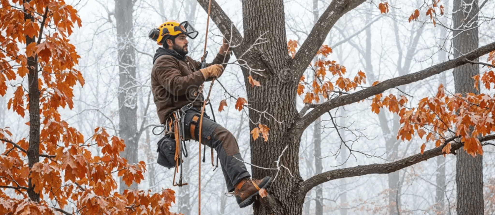

Dorms are named after the town's vanished industries — Millhouse, Foundry Hall, Tannery Row — each with its own minor identity: Millhouse is known for an ongoing, decade-spanning game of hallway chess played by mail-slot notes; Foundry Hall runs the loudest common-room movie nights; Tannery Row has a reputation (fair or not) for being where the campus's serious birdwatchers live, on account of its proximity to Alder Hollow
The dining hall, The Hearth, does a standing Thursday-night "bring a family recipe" swap where students submit dishes to be added to the rotation. Off campus, The Cartographer's Table — a diner named half-jokingly after the map-studies program — is the unofficial 2 a.m. study spot.